|
Функции:
1 Автокликер
--- 1.1 Кнопка выбора координат на экране --- 1.2 Координата X --- 1.3 Координата Y --- 1.4 Интервал между кликами в миллисекундах (1с=1000мс)
7 Каталог назначений
--- (7.1) Выбор вкладки: Каталог назначений --- (7.2) Выбор вкладки: Телефонный справочник --- (7.3) Строка поиска |
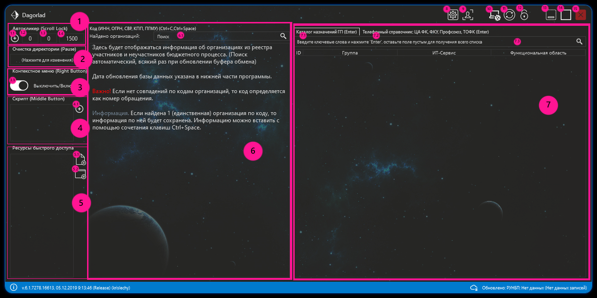
|
|
|---|---|---|
1. Автокликер |
||
| 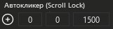 | Кнопкой (1.1) происходит выбор на экране точки куда будет с периодичностью (1.4) кликать программа, обычно это используется для обновления страницы с обращениями. Активация события: клавиша на клавиатуре - Scroll Lock | |
2. Очистка директории |
||
| 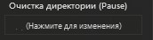 | Нажатия левой кнопкой мыши на поле (Нажмите для изменения) открывает окно для выбора директории, где по вызову клавишы (Pause) будет очищаться указанная директория. Обычно используется для очистки папки с загрузками, при добавление информации из одного обращения в другой, постоянно копятся файлы - это создает трудности для выбора конкретного файла при добавлении вложения в обращения. Нажал (Pause) - директория очистилась, а дальше загружаешь вложения и добавляешь в другое обращение, нет нужды теперь заниматься поиском конкретного файла. | |
3. Контекстное меню |
||
|
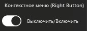
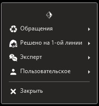 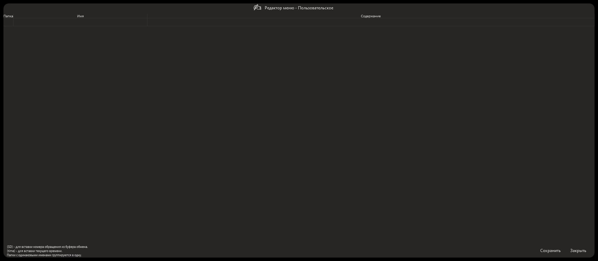 |
При включенном флажке позволяет вызывать нажатием правой кнопки мыши контекстное меню.
Здесь содержаться готовые фразы для ответа в обращение: будь то решение на 1-ой линии, либо комментарий для пользователя или группы поддержки.
В меню "Пользовательское" -> "Редактор меню" - можно настроить собственные фразы.
Редактор менюВ таблице 3 столбца: Папка, Имя, Содержание. Папка - служит для группировки готовых фраз по типу, достаточно назвать две папки одинаковыми именами и они сгруппируются в одну. Имя - заголовок фразы, для определения типа самого содержания. Содержание - сам текст фразы, если добавить сюда переменную {SD} - то добавиться вместо нее номер обращения который ранее был скопирован в буфер обмена (Ctrl+C), если добавить {time} - то добавиться текущее время. Добавление новых строк или завершение редактирования старых - клавиша Enter P.S.: К сожалению в Mozilla FireFox контекстное меню не вставляет информацию автоматически, а только копирует в буфер, решение: информацию можно вставить через сочетание клавиш Ctrl+V. При возникновении проблем, например не появляется окно контекстного меню, нажмите кнопку 11. |
|
4. Скрипт |
||
| 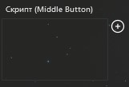 |
Добавление скрипта по которому будет двигаться курсор мыши и кликать в указанных координатах Вам достаточно нажать на кнопку (4.1) и выбрать куда кликать мышке. В последней колонке по умолчанию указана цифра 0 - которая свидетельствует о том, что активация скрипта будет происходить по средней кнопке мыши, если указать цифры от 1-9 вместо 0, то активация скрипта будет происходить по сочетанию клавиш Ctrl+(1-9). Добавлять можно несколько комбинаций, только следует быть аккуратным. В первой колонке можно присвоить имя скрипту, что бы не запутаться. |
|
5. Ресурсы быстрого доступа |
||
| 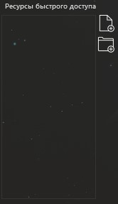 | По кнопке (5.1) - конкретные файлы, или (5.2) - конкретная директория, можно указать директорию или файлы соответственно которые можно будет запустить прямо из программы двойным кликом по строке. Это удобно для открытия файлов или папок которые сложно найти, и каждый раз приходиться их искать. Можно например добавить папку "Загрузки" для быстрого доступа к ней. | |
6. Поиск организации |
||
| 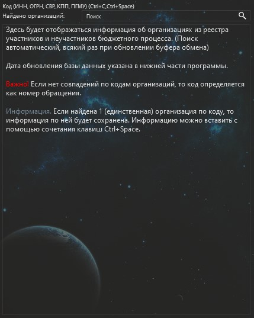 | Поиск организаций происходит по сочетанию клавиш (Ctrl+C), программа автоматически в фоновом режиме будет искать и сопостовлять попавший в ее руки номер организаций (ИНН, КПП, ОГРН, СВР, ПГМУ). Если огранизация будет найдена Вам придет уведомление об этом. В поле (6.1) можно искать организацию уже среди найденнны, их бывает много! Это полезно и для создания контактна и для добавления в обращение информацию о пользователе - некоторые группы поддержки требуют эту информацию. | |
7. Каталог назначений |
||
| 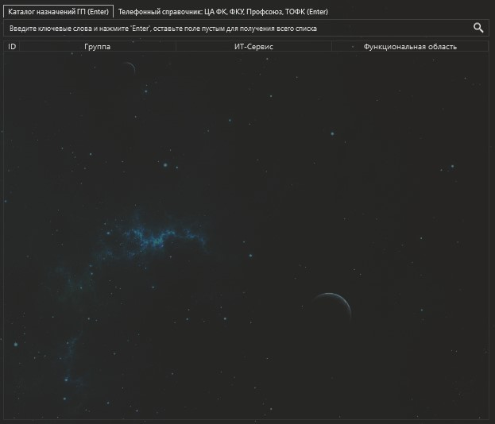 |
В этой части программы есть две вкладки: (7.1) Каталог назначений и (7.2) Телефонный справочник.
В строке поиска (7.3) вводим необходимый запрос и смотрим результат.
Каталог назначенийИспользуется для поиска группы поддержки и как на нее назначить в соответствии с регламентом. Телефонный справочникИспользуется для поиска контакта по номеру телефона или ФИО, обычно это полезно для группы ДС ФК. |
|
8. Настройки |
||
| 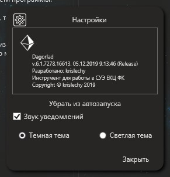 | При запуске программы она автоматически прописывает себя в реестре для автозапуска программы после включения/перезагрузки компьютера, для того что бы отключить автозапуск достаточно нажать кнопку "Убрать из автозапуска", имейте ввиду если после этого Вы снова запустите программу, то она опять запишет себя в автозапуск. Следом идет чекбокс который включает или отключает звук в уведомлениях. И далее можно выбрать тему темная/светлая - после выбора приложения, оно будет перезапущено, на некоторых компьютерах перезапуск не работает, придется запускать приложение вручную. | |
9. Список сотрудников |
||
|
Список сотрудников ЕКЦ, с указанием: ФИО, Должности, Номер телефона, Дня рождения, а также направление к которому сейчас привязан сотрудник. |
||
10. Сообщить о проблеме |
||
| Сообщите о проблеме или пожелании разработчику. | ||
11. Перезагрузка глобальных клавиш |
||
| Если возникли проблемы с контекстным меню, или оно просто не появляется, может помочь нажатие на эту кнопку. | ||
12. Закрепить окно |
||
| Закрепляет окно поверх всех окон. | ||
13. Свернуть окно |
||
| Сворачивает приложение в трей. | ||
14. Развернуть окно |
||
| Разворачивает приложение на весь экран. | ||
15. Закрыть приложение |
||
| Закрывает приложение. | ||